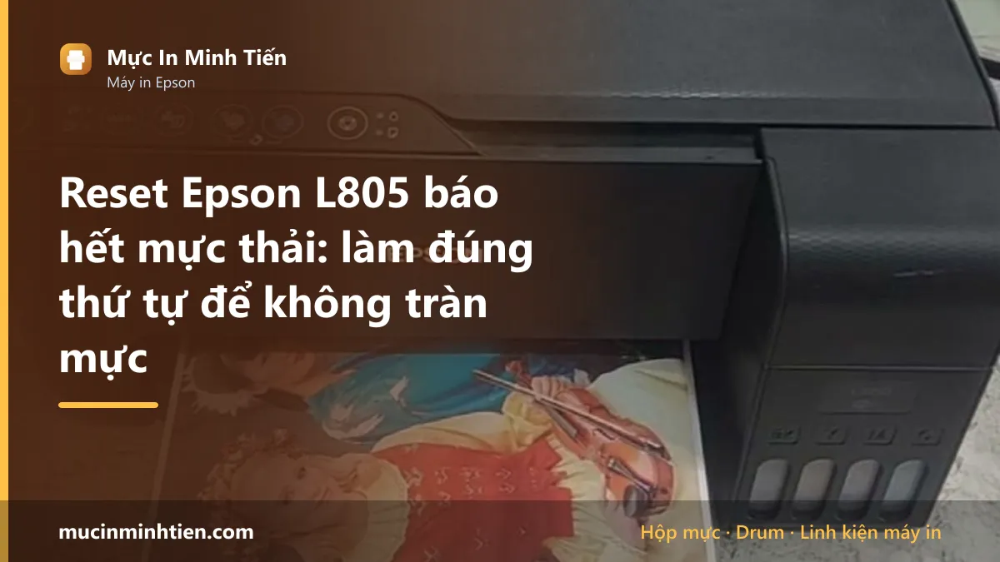
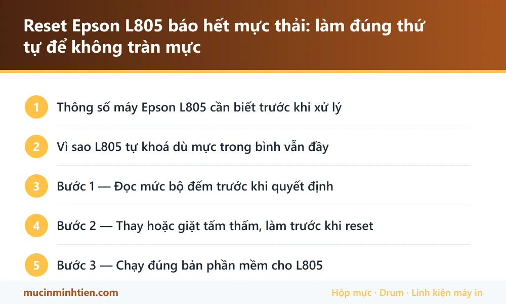

Reset Epson L805 báo hết mực thải: làm đúng thứ tự để không tràn mực

Epson L805 khoá máy và báo "ink pad is at the end of its service life" khi bộ đếm mực thải đầy. Việc cần làm theo đúng thứ tự: kiểm tra và thay tấm thấm dưới đáy máy trước, sau đó mới reset bộ đếm bằng bản phần mềm đúng cho L805 — bản của L8050 là bản khác, chạy nhầm thì máy không nhận.
Thông số máy Epson L805 cần biết trước khi xử lý
Biết đúng máy mình đang dùng loại nào giúp khỏi mua nhầm vật tư và khỏi làm theo hướng dẫn của dòng khác.
| Hạng mục | Chi tiết |
|---|---|
| Kiểu máy | In phun bình mực khổ A4, có in đĩa CD/DVD — không có scan |
| Mực dùng | Epson 673 — sáu màu, dạng chai châm vào bình |
| Bộ đếm mực thải | Có. Đầy thì máy khoá, đèn báo lỗi và không in được |
| Tấm thấm mực thải | Mút đặt dưới đáy máy, phải thay hoặc giặt khi bộ đếm đầy |
| Bản phần mềm reset | Riêng cho L805/L810/L850. L8050 là máy khác, dùng bản khác |
Vì sao L805 tự khoá dù mực trong bình vẫn đầy
Mỗi lần máy làm vệ sinh đầu phun, một lượng mực bị xả bỏ vào tấm mút dưới đáy máy. Máy đếm số lần xả đó. Tới ngưỡng nhà sản xuất đặt ra, máy tự khoá để mực thải không tràn ra ngoài và ngấm vào bo mạch.
Nghĩa là máy không hỏng — nó đang đòi bảo dưỡng. L805 lại là dòng in ảnh, nhiều người để lâu không in rồi mỗi lần in phải clean vài lượt, nên bộ đếm đầy nhanh hơn máy in văn phòng cùng tuổi.
Triệu chứng đi kèm: đèn báo lỗi sáng hoặc nháy, phần mềm Epson trên máy tính hiện dòng chữ về ink pad, và lệnh in bị chặn ngay từ đầu chứ không in ra trang nào.
Bước 1 — Đọc mức bộ đếm trước khi quyết định
Phần mềm reset cho phép đọc mức bộ đếm miễn phí, chưa cần trả tiền. Đọc trước để biết mình đang ở đâu:
- Dưới 90% — máy khoá vì lý do khác, kiểm tra lại kẹt giấy, cảm biến, đầu phun trước khi nghĩ tới reset.
- Trên 95% hoặc 100% — đúng bệnh tràn bộ đếm, và tấm thấm bên dưới gần như chắc chắn đã no mực.
Đây là bước hay bị bỏ, và bỏ nó là lý do nhiều ca reset xong vẫn không in được: vì ngay từ đầu máy khoá vì chuyện khác.
Bước 2 — Thay hoặc giặt tấm thấm, làm trước khi reset
Reset chỉ xoá con số trong bộ nhớ. Mực thải thật vẫn nằm nguyên trong máy. Bỏ qua bước này thì vài tháng sau mực chảy ra mặt bàn và ngấm vào bo mạch — ca đó sửa tốn gấp nhiều lần.
- Rút điện, lật nghiêng máy, mở nắp đáy để lộ khoang chứa mút thấm.
- Lấy mút ra. Mút đẫm mực đen là đã no. Thay mút mới, hoặc giặt thật sạch và phơi khô hoàn toàn mới lắp lại — mút còn ẩm lắp vào gây ẩm bo.
- Cân nhắc lắp bình mực thải ngoài: dẫn ống xả ra bình đặt bên ngoài máy. Lần sau chỉ đổ bình, không phải tháo máy nữa. Rất đáng với máy in ảnh in nhiều.
Chuẩn bị găng tay và giấy lót — bước này bẩn, mực dính tay rất khó rửa.
Bước 3 — Chạy đúng bản phần mềm cho L805
Thứ tự thao tác: cắm cáp USB thẳng vào máy tính (không qua hub), bật máy in, mở phần mềm, chọn đúng model, vào mục bộ đếm mực thải, đọc mức hiện tại, nhập khoá kích hoạt rồi chạy lệnh reset. Xong thì tắt máy in, chờ khoảng mười giây, bật lại và in trang kiểm tra đầu phun.
Phần mềm không phải của Epson mà do đơn vị thứ ba bán theo khoá — xem bảng tra model và nguồn tải chính chủ. Tránh các bản "full crack" chia sẻ trên mạng: file chạy quyền quản trị, đây là mồi cài mã độc phổ biến nhất trong môi trường văn phòng.
L805 và L8050 là hai máy khác nhau — đừng chạy nhầm bản
Hai tên gần giống nhau nhưng là hai dòng máy khác hẳn, và đây là nhầm lẫn gặp nhiều nhất khi tìm phần mềm:
- L805 — in phun sáu màu khổ A4, mực 673, có in đĩa, không scan.
- L8050 — dòng EcoTank đời mới, sáu màu, mực 008, bố trí bo và firmware khác.
Bản reset của L805 không chạy cho L8050 và ngược lại. Chạy nhầm thì nhẹ là phần mềm báo không tìm thấy máy, nặng là ghi sai thông số trong máy. Đọc đúng tên model ghi ở mặt trước máy trước khi tải bất cứ thứ gì.
Bảng tra: dấu hiệu nào ứng với nguyên nhân nào
| Dấu hiệu | Nguyên nhân | Cách xử lý | Chi phí |
|---|---|---|---|
| Máy báo ink pad end of service life, không in được | Bộ đếm mực thải đầy | Thay tấm thấm rồi reset bộ đếm | Kiểm tra rồi báo giá |
| Reset xong vẫn báo lỗi cũ | Chạy nhầm bản (L8050 thay vì L805) hoặc chưa tắt bật máy đúng cách | Chạy lại đúng bản, tắt máy 10 giây rồi bật | — |
| Reset xong in được nhưng bản in sọc, mất màu | Đầu phun tắc, không liên quan bộ đếm | Vệ sinh đầu phun theo quy trình riêng | từ 100.000 đ |
| Mực chảy ra mặt bàn sau vài tháng | Đã reset mà không thay tấm thấm | Thay mút thấm, vệ sinh khoang đáy, kiểm tra bo | Kiểm tra rồi báo giá |
| Phần mềm không nhận máy | Cắm qua hub USB, cáp kém, hoặc máy đang kẹt lỗi khác | Cắm thẳng cổng sau máy tính, xử lý lỗi đang treo trước | — |
Vật tư cho Epson L805 có sẵn tại kho 77 Bắc Hải, Phường Diên Hồng, TP.HCM — xem bảng giá 773 mã hoặc gọi 0986 704 260 kèm model máy.
Khi nào nên gọi kỹ thuật viên
- Không muốn tháo đáy máy, hoặc tháo ra rồi không biết lắp lại
- Mực đã tràn ra đế máy, có vệt mực dưới gầm hoặc trên mặt bàn
- Reset xong máy vẫn khoá, đã thử đúng bản mà không được
- Máy còn hạn bảo hành — nên mang tới trung tâm hãng thay vì tự can thiệp
- Muốn lắp bình mực thải ngoài để sau này khỏi tháo máy
Báo giá xử lý Epson L805 tận nơi
| Hạng mục | Giá tham khảo |
|---|---|
| Vệ sinh, thay tấm thấm mực thải | Kiểm tra rồi báo giá |
| Reset bộ đếm mực thải (kèm bảo dưỡng) | Kiểm tra rồi báo giá |
| Lắp bình mực thải ngoài | Kiểm tra rồi báo giá |
| Vệ sinh đầu phun | từ 100.000 đ |
| Mực Epson 673 (6 màu) | Xem bảng giá vật tư |
Kỹ thuật viên kiểm tra và báo giá trước khi làm — xem cam kết ở dịch vụ sửa máy in tận nơi TP.HCM.
Cách phòng tránh tái phát
- In đều mỗi tuần vài trang thay vì để máy nằm im hàng tháng — máy để lâu phải clean nhiều, bộ đếm đầy nhanh.
- Đừng bấm Head Cleaning liên tục khi bản in chỉ hơi nhạt; mỗi lần clean là một lần xả mực vào tấm thấm.
- Dùng mực đúng chuẩn cho máy; mực kém dễ tắc, tắc thì lại phải clean.
- Lắp bình mực thải ngoài ngay từ lần bảo dưỡng đầu tiên nếu máy in khối lượng lớn.
